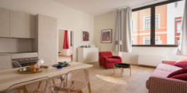

Atrakcyjna kawalerka z sypialnią i pokojem dziennym połączonym z aneksem kuchennym. Wielką zaletą mieszkania jest przestronny hol z miejscem, które warto wykorzystać pod garderobę. Zarówno z pokoju dziennego, jak i sypialni można wyjść na taras o powierzchni 8 m2, który stanowić będzie przyjemny azyl dla mieszkańców. Aneks kuchenny usytuowany jest w taki sposób, by łatwo i atrakcyjnie wizualnie oddzielić się od pokoju dziennego, na przykład wysokim blatem i hokerami. W ten sposób zyskać można oryginalną jadalnię lub też stworzyć ażurowy regał na książki czy bibeloty.

Mieszkanie optymalne dla niedużej rodziny, posiadające 2 sypialnie, pokój dzienny z aneksem kuchennym. W przestronnym holu jest miejsce na dużą szafę zabudowaną. Pokój dzienny zajmuje powierzchnię 21 m2 i łatwo można go oddzielić od aneksu kuchennego stołem, kreując jadalnię, lub wyspą, niezwykle przydatną w nowoczesnej kuchni. Mieszkanie jest doświetlone, z pokoju dziennego na taras przechodzi się przez niemal 3-metrową witrynę, która otwiera przestrzeń, dodając jej lekkości i łącząc ze światem zewnętrznym. Łazienka w mieszkaniu jest spora, w kształcie optymalnym dla tego typu pomieszczenia, bez problemu pomieści więc wszelkie niezbędne sprzęty i meble.